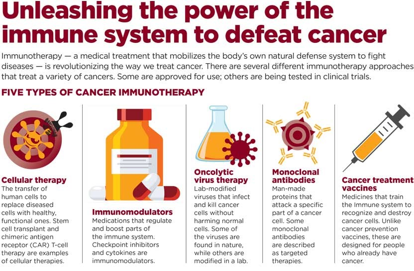

Introduction
Medical breakthroughs are advances that have the potential to improve the treatment and prevention of diseases, enhance the quality of life, and increase life expectancy. With constant progress in research and technology, the medical field has seen significant advancements, including in genomics, immunotherapy, and artificial intelligence.
Genetic Engineering and CRISPR
One of the most revolutionary medical breakthroughs in recent years is the development of CRISPR gene-editing technology. This tool allows scientists to make precise alterations to DNA, offering hope for treating genetic disorders, such as sickle cell anemia and cystic fibrosis. CRISPR holds the potential to cure hereditary diseases and revolutionize personalized medicine.
Immunotherapy
Immunotherapy is a treatment that uses the body’s immune system to fight cancer. Breakthroughs in immunotherapy have led to the development of cancer vaccines and checkpoint inhibitors, which have shown promising results in treating various types of cancer, including melanoma, lung cancer, and leukemia.
Artificial Intelligence in Medicine
AI has become a game-changer in healthcare. Machine learning algorithms can now analyze medical data, predict disease progression, and recommend treatments. AI is used in radiology for interpreting medical images, in drug discovery, and in monitoring patients with chronic conditions, leading to more accurate diagnoses and personalized treatment plans.
Regenerative Medicine
Stem cell therapy and tissue engineering are opening new possibilities in regenerative medicine. These breakthroughs enable the growth of new tissues and organs, offering hope for patients with organ failure and injuries. Researchers are also exploring how to repair or replace damaged tissues using stem cells and bioengineered tissues.